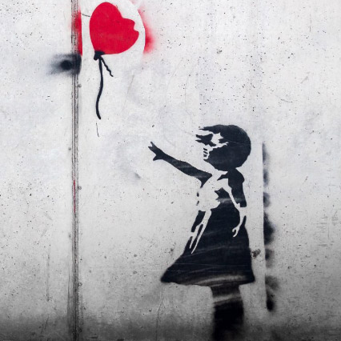
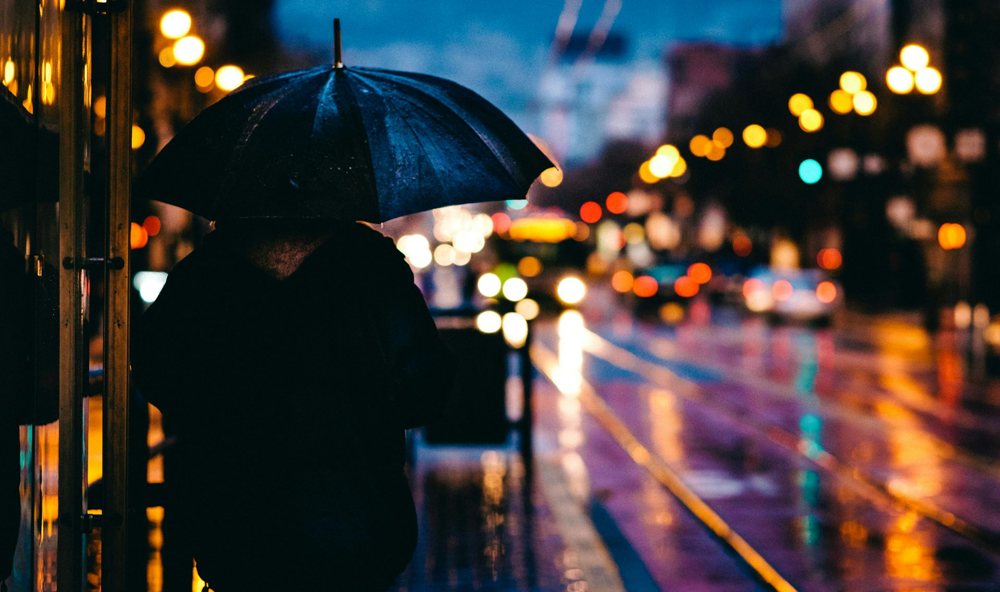
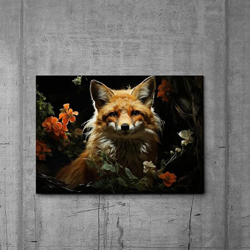

رابطه و شکست
 نویسنده: فاطمه صالحی
یادمه وقتی که بچه بودم، داشتم حاضر میشدم تا برم اسباب بازیی که خیلی وقت بود پول تو جیبی هام رو براش جمع میکردم، بخرم. داشتم بند کفش هام رو می بستم؛ خیلی هم ذوق داشتم چون تازه یاد گرفته بودم خودم بند کفش هام رو ببندم و این باعث میشد احساس مستقل بودن زیادی پیدا کنم.
وقتی بند کفش هام رو بستم با ذوق دوییدم که از پله ها برم پایین و سوار ماشین بابام بشم اما پام پیچ خورد و از طبقه ی دوم روی پله ها غلت خوردم و در همون حال مامانم رو صدا زدم؛ اما تا مامانم بهم رسید، من با یه صورت خونی به پایین پله ها رسیده بودم.
از اون به بعد دیگه برای اسباب بازی یا خودم بستن بند کفش هام ذوق نکردم.
از اون روز به بعد دیگه منتظر میموندم تا مامانم کفش های خودش رو بپوشه، تا من دستش رو بگیرم و باهم از پله ها بریم پایین. از اون روز به بعد دیگه نه تنها از پله های خونه ی خودمون، بلکه از تمام پله ها میترسیدم، و برای پایین اومدن ازشون نیاز داشتم که یکی دستم رو بگیره.
حالا، خیلی از اون داستان میگذره. من دیگه از پله نمیترسم و نه نیاز دارم که دست کسی رو بگیرم. فقط، هر دفعه که به پله ای میرسم، مغزم دوباره اون خاطره رو برام یاد آوری میکنه، فقط محض اینکه بهم بگه: هی! مواظب باش دوباره نیوفتی.
تو هم شبیه همون پله هایی؛ دیگه نه ازت میترسم و نه نیاز به کس دیگه ای دارم که کنارم باشه، وقتی که ازت رد میشم.
حالا، فقط هربار که آدم جدیدی وارد زندگیم میشه، مغزم بهم یاد آوری میکنه که، مواظب باشم؛ تا دوباره نیوفتم.
هانامی ( دورهمی خونین شکوفه ها )
نویسنده: محدثه طوبا
# معرفی فستیوال
نمی توانستم چشم از او بردارم، میخواستم دنبالش کنم تا ببینم نهایت به کجا میرود.
چشم هایم مسیرش را دنبال میکرد.
مسیر او را نسیم تعیین میکرد؛
نسیمی که بر جان من میزد، و هربار تا از من رد شود، تنم را مور مور میکرد.
نسیمی که مرا تازه میکرد.
اما او را، در دل خود می رقصاند.
ناگهان،
اتفاقا آمد و خورد به صورت من؛ و نشست روی لب هایم.
حرف ها، داستان هایی هزار ساله را نقل کرد.
از دل درخت تنومندی که روزی روی شاخه اش ساکن بود،
از زبان ساکتش بر دل مشتاقم جاری کرد.
اینطور شنیدم، چنین روایت کرد:
به به چه عطری!
عطر نفس های توام با حسرت یک عاشق دور مانده از معشوق.
عجب رنگی!
همه ی شهر بی رنگ و بی حال.
این اما سفید؛ سفید به پاکی. و خلوص عشق وفادارانه.
انتظاری بی منت.
انتظاری بی منت.
شکوفه های گیلاس هر آنچه را که مظهر آن بود، از تولد تا مرگ،
و از زیبایی، شکنندگی و ظرافت داشت را برایم گفت.
داستانی از میان داستان های هزار ساله سرزمین آفتاب تابان.
افسانه ی یک زن.
زنی که در انتظار همسر به جنگ رفته اش هربار به درختی پناه میبرد.
و یک تنه ی چوبی خشک سنگ صبورش بود،
برای عشق و انتظارش.
شاهد مرگ تدریجی عاشق و عشقش.
و همین پاکی عشقش خونین هزار سال است که از دل یک تنه ی چوبی شکوفه میزند.
و یک سرزمین، غم مرگ عشقی را جشن بهارانه میگیرد.
بذر تنهایی
 نویسنده: آیدا خاوری# شعر
حذر کردن به از بودن
به هر جمعی که درآن دوستان چون دشمنان
در پی افکندن یارند
من این اندرز گویم تا بیندیشی
که مردن در دل غم ها
به از بودن میان جمع ولی تنها
تو می پوسی...تو می میری...
و اما زنده ای آنجا....
حذر باید حذر زین جمع
تو در تنهایی خویشتن
همانند همان بذری
که می افتد به روی خاک
درون خاک افسرده
تو می رویی...تو می بالی...
و روزی میوه خواهی داد ?
راهب چینی
نویسنده: فاطمه سیدی
# داستان کوتاه
پریا سردرگم بود. بعد از ناکامی های عشقی اخیرش با پسر هایی که میتونست باهاشون خوشحال باشه، ازدواج کنن و با هم خونه ی کوچیکی تو یک روستای سرسبز بیرون از این شهر شلوغ و پر از سر و صدای ماشین بگیرن؛ و آخر شب های آخر هفته های خسته کننده ی سرد دی ماه، کنار هم درحالی که هر دوشون جوراب های پشمی گرم پوشیدن ، زیر یه پتوی کوچیک روی کاناپه ی راحت و ارزونشون مچاله بشن و توی سکوت یه فیلم درام با یه پایان شاد رو نگاه کنن. پریا شکست خورده بود.
از کارش به خاطر بی تعهدی و تحویل ندادن به موقع پروژه هاش اخراج شده بود. تنها بود. از گروه دوستانه ای که یه روز فکر میکرد چقدر بابت داشتنشون خوشبخته، فاصله گرفته بود؛ چون اونا درک نمیکردن. هیچیو درک نمیکردن.
روزهای بهاری مشهد گرم و آلوده بود به صدای بوق ممتد ماشین های تک سر نشین و دود سیگار های افسرده. برای همین مجبور شده بود قدم زدنش رو به شب ها موکول کنه. اما امروز عصر بارون مختصری گرفته بود و زمین هارو خیس و بوی گل رو توی هوا پخش کرده بود که، باعث میشد پریا دلش بخواد یه امروز رو بجای قدم زدن توی خونه بمونه و کتاب بخونه. اما ممکن نبود. باید میرفت بیرون. باید راه میرفت. چون اگه فقط یک ساعت دیگه توی خونه می موند و به صدای تفنگ در آوردن بچه های خواهرش گوش میداد، یا باباشو میدید که توی یک دقیقه بیست بار ادای مردن رو در میاره، یا عقلش رو از دست میداد، و یا سر باباش و بچه ها داد میزد. و این چیزی نبود که برای وقار و متانت خانومانش که همه ازش تعریف میکردن خوب باشه.
برای رسیدن به پارک مورد علاقش برای گردش باید سوار اتوبوس میشد. به خاطر کوتاهی پای چپش از پای راستش موقع پیاده شدن از پله های بلند و تیز اتوبوس همیشه اذیت میشد. این بار هم شکل بد پله ها و عجله ی راننده برای حرکت کردن و زیاد پیر بودن زنی که جلوتر از اون داشت پیاده میشد باعث شد تعادلش رو از دست بده و پاشو توی چاله ی آب بزاره. علاوه بر کفش و جورابش، پاچه ی شلوارش هم خیس شد. باید با پدرش تماس میگرفت و میگفت که چه اتفاقی افتاده تا بیاد دنبالش. نمیتونست با کفش و جوراب خیس برگرده. اگه اینجوری آب چکون و خیس سوار اتوبوس میشد، بد جوری کثیف کاری به بار میاورد و زحمت کسی که مجبور میشد اونو تمیز کنه رو ده برابر میکرد. گرچه میدونست با توجه به مسافت بین خونه تا اونجا و با در نظر گرفتن ترافیک اون منطقه توی اون ساعت از شب پدرش دیر بهش میرسید و خب یکم وقت برای گشتن دنبال یه کفش مناسب تر _که تو این شرایط آب توشون نره و جوراباشو خیس نکنه_ داشت. از خیابون رد شد تا ویترین کفش فروشی ها رو نگاه کنه. اما بعد از چک کردن چند مغازه فهمید که اینجا نمیتونه کفش مناسب سلیقه شو پیدا کنه. اون بازار فقط به درد کسایی میخورد که مامانشون براشون لباس میخرید. اما اینجا یه مغازه ی عتیقه فروشی بود که پریا واقعا عاشقش بود. توی یک کوچه خلوت بود و پریا گاهی از دور نگاهش میکرد اما هیچ وقت داخلش نرفته بود. هیچ وقت فرصتش رو نداشت. اما میدونست که اونجا حتما میتونه چیزی پیدا کنه که با سلیقش جور باشه. شاید یه مجسمه ی برنجی برای روی کتابخونش پیدا میکرد. از بین جمعیتی که منتظر باز شدن یه مغازه ی تخفیف دار بودن، به سختی رد شد و خودشو به کوچه ای که مغازه ی عتیقه فروشی توش بود رسوند.اونجا نسبت به بقیه ی اون منطقه هم خلوت تر بود و هم تاریک تر. غیر از عتیقه فروشی یه مغازه ی کتاب فروشی اونجا بود و یه مغازه ی لباس زنونه. خوشحال وارد کوچه شد اما دید عتیقه فروشی بسته ست. نا امید شد و میخواست برگرده که چشمش به مجسمه یک راهب چینی افتاد که در حال ذن بود. با وجود اینکه داخل مغازه تاریک بود اما راهب نزدیک در شیشه ای مغازه بود و انعکاس نور های بیرون اونو تقریبا واضح و قابل دیدن میکردن.
فکر کرد، جای اون راهب بودن چه حسی میتونست داشته باشه؟ شاید اگه میرفت چین میتونست مثل این راهب آرامش پیدا کنه. میتونست دو سال وقت بزاره و زبان چینی یاد بگیره. اون آلمانی و روسی یادگرفته بود؛ مگه چینی چقدر سخت بود؟ میتونست موهاشو بتراشه و نگران اینکه کچلی بهش نیاد نباشه. توی آرامش و سکوت زندگی کنه و با طبیعت یکی بشه. دیگه نه خبری از آلودگی هوا بود و نه صدای ماشین ها. دیگه مجبور نبود برای به اتوبوس رسیدن بدوعه.
اسمش رو هم عوض میکرد. شاید حتی میتونست دستش رو دراز کنه و پوستی که روی صورتش بود رو برداره. اونوقت چهره ی واقعیش پیدا میشد. و بالاخره خودش رو نشون میداد. یه دختر زیبا و لاغر که توسط تمام پسرها و مردهایی که اونو رها کرده بودن دوست داشته میشد. اون روز دختر خجالتی درونش اون رو ترک میکرد و پریا بالاخره میتونست وسط یه خیابون شلوغ برقصه. شایر روزی می رسید که دیگه فکر نمیکرد مجبوره خودش رو پشت لباس های گشاد با رنگ های خنثی و یا پشت سکوتش پنهان کنه. فقط باید دو سال وقت میذاشت و چینی یاد میگرفت.
مشغول تبدیل شدن به دختر ایده آل خودش بود که یکی بهش سلام داد. برگشت و دید یکی از پسرهایی که باهاش دانشگاه میرفته پشت سرش ایستاده و بهش لبخند میزنه. یادش اومد که چقدر مهربون بوده و اینکه چطور همه میگفتن آرامش بخشه و با همه _حتی کسایی که به سختی میشناخته و یا حتی اصلا نمیشناخته_ با محبت و احترام رفتار میکرده. یادش اومد که یکبار وقتی دست هاش پر از وسیله بوده اون در کلاس رو براش باز کرد.
لبخندی به پسر زد و برگشت. از جلوی مغازه ی کتاب فروشی رد شد، از پسر دور شد و از کوچه بیرون رفت. دوباره به سختی خودشو از بین جمعیت منتظر برای باز شدن مغازه ی تخفیف دار بیرون کشید و توی ایستگاه اتوبوس ایستاد.
عشق،زاغ،روباه
 نویسنده: آیدا خاوری# شعر
در کودکی خواندیم
زاغکی غالب پنیری دید
همه خواندیم و خندیدیم
بی درنگ مدح روبه را گفتیم
لیک امروز دریافتم من
شعر را آن زمان خوب نفهمیدیم
زاغک ساده لوح قصه ی ما
عاشق حرف های روبه بود
عاشق آن تملق به دروغ
عاشق رنگ و بوی روبه بود
مانده بود چه کند تا شاید
دمی صحبت کند او با روبه
که بدید غالب پنیر در ره
به دهن برگرفت و ماند او بر ره
منتظر تا که سر رسد روبه
روبه پر فریب و حیلت ساز
بگرفت غالب پنیر و رفت
زاغک عاشق قصه ی ما
شد از خوشحالی آن روبه مست
شاید آن تکه پنیر دامی بود
تا که آن زاغ حرف زند با روبه
مطمئنم که باز اگر باشد
تکه ی پنیر دیگری در ره
زاغک پیر قصه ی ما
باز هم بنشیند بر ره
منتظر تا که بازگردد آن روبه...❤
مرگ آرزوها
نویسنده: آیدا خاوری
# شعر
شبی در انتهای کوچه ای باریک
در آن بیغوله ی تاریک و مخروبه
تک و تنها
بدون یاوری با کوله باری از غم و حسرت
از اینجا بی تو خواهم رفت
در آن ساعات پایانی
به یاد تک تک لحظات
که بی مقصد فقط رفتم
تماشا میکنم مرگم ...؟